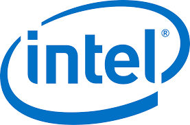

Qual o conceito dos Microcontroladores
Como surgiram os Microcontroladores
O primeiro microcontrolador foi lançado em 1977, pela empresa Intel, e ganhou a sigla “8048”.
Para que servem os Microcontroladores
O microcontrolador tem como função auxiliar no funcionamento de dispositivos eletrônicos não digitais, aqueles que não tem um sistema operacional.